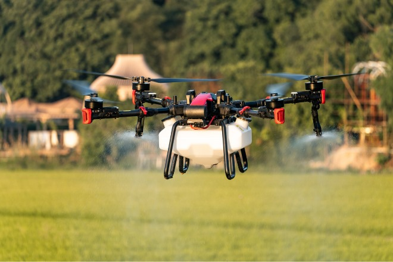
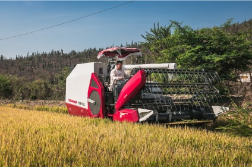
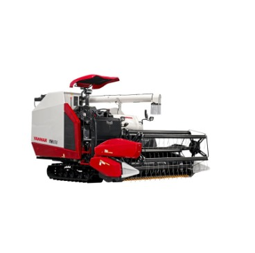
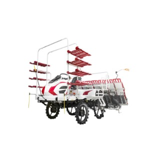

Agrícola

Drone Agrícola P100 Pro
Esta innovadora aeronave revoluciona las labores agrícolas con su tecnología de pulverización y aplicación de productos sólidos.
- Capacidad de carga: 30 L
- Autonomía de vuelo: 40 minutos
- Velocidad máxima: 25 km/h
- Precio: $8,500 USD

Equipos Yanmar Cosechadora YH850L
La cosechadora Yanmar YH850L es ideal para un alto rendimiento en la cosecha. Su doble rotor garantiza una clasificación eficiente sin pérdidas.
- Capacidad de tolva: 5.5 m³
- Potencia del motor: 245 hp
- Ancho de corte: 7.6 m
- Precio: $125,000 USD

Tractor John Deere 6110M
Un tractor versátil y potente, ideal para una amplia variedad de tareas agrícolas, con motor de 110 hp.
- Potencia del motor: 110 hp
- Capacidad de elevación: 4,560 kg
- Transmisión: 24F/24R PowerQuad Plus
- Precio: $85,000 USD

Sembradora de Precisión Monosem NG Plus
Esta sembradora de precisión es ideal para obtener cultivos homogéneos, gracias a su sistema avanzado de distribución de semillas.
- Ancho de trabajo: 6 m
- Filas de siembra: 12
- Distancia entre filas: 70 cm
- Precio: $45,000 USD